Instalação do FreeDOS
Introdução
Eu tenho um certo amigo, bem tiozão, ele tem uma múmia em casa que ele chama de computador, e queria uma alternativa mais moderna e que ainda tenha suporte para reviver os "velhos tempos" do DOS... E pra isso eu fiz esse tutorial. Óbvio que se você tiver uma múmia de pc, também pode ser útil para você, o FreeDOS é um excelente sistema operacional, EMBORA obviamente NÃO SEJA FEITO para um usuário médio em 2024.
Você pode baixar o FreeDOS através desse link, selecione a versão conforme o seu hardware, em resumo:
FreeDOS for everyone - .ISO padrão de instalação, essencialmente para máquinas modernas e/ou virtuais.
For real hardware - .IMG padrão de instalação, essencialmente a mesma coisa da opção acima só que para gravação em pendrive.
For older hardware - .ISO padrão de instalação para sistemas sem suporte a LiveCD.
For classic hardware - Caso você queira rodar isso na desgraça de um IBM PC usando disquete...
Como meu computador é velho mas não é do período paleolítico, vou usar a versão FreeDOS for everyone que se divide em 2 arquivos:
FD13BOOT.IMG - Imagem de disquete de inicialização da instalação básica do FreeDOS.
FD13LIVE.ISO - O instalador LIVE do FreeDOS 1.3. A maioria dos usuários deve usar essa imagem para instalar o FreeDOS.
Vou usar a imagem FD13BOOT.IMG pelo Ventoy, caso não saiba como preparar o pendrive veja este link.
Instalação
Selecione a opção Install to harddisk para instalar no HD...
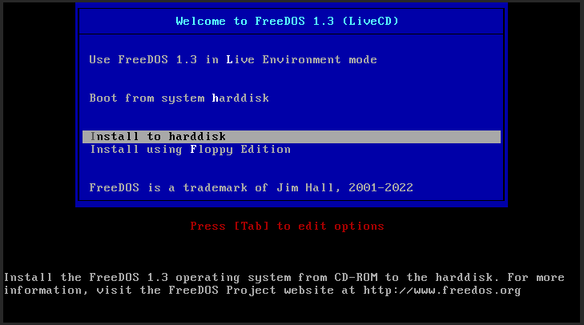Selecione o idioma, no caso vou selecionar inglês na falta de pt-BR...

Selecione YES - Continue with the installation caso tenha feito backup e vá instalar no disco, lembrando que todo o conteúdo do disco pode ser apagado!
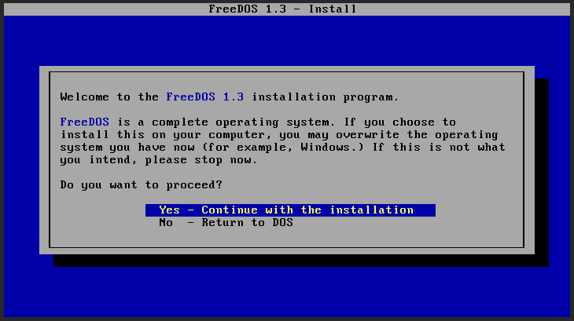Se o drive não está devidamente formatado vai aparecer a opção de formatação, para isso selecione o YES - Partition drive C:...
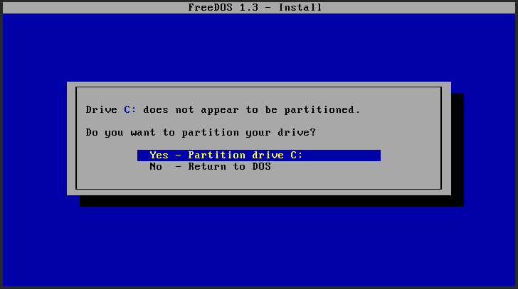Espere o fim do procedimento...

Como isso é DOS você precisa reiniciar para prosseguir, selecione YES - Please reboot now.
Pra não ter que colocar todas as fotos novamente, após o computador reiniciar siga a instalação até esse ponto novamente...
E dessa vez provavelmente a opção que vai aparecer é esta, para apagar e formatar o disco C:, selecione YES - Please erase and format drive C:...
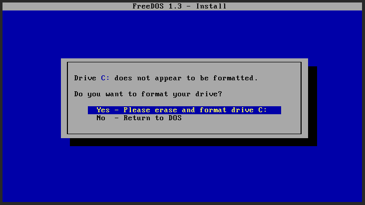Espere o fim do procedimento...
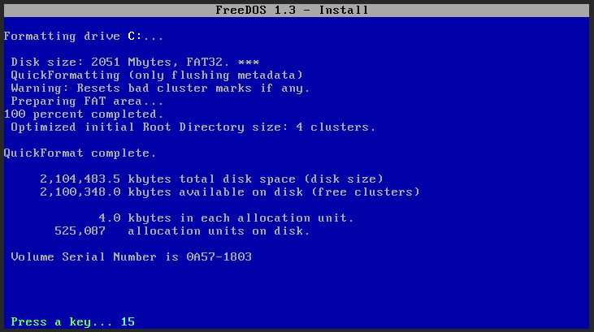Para selecionar o teclado vá na opção More keyboard choices...
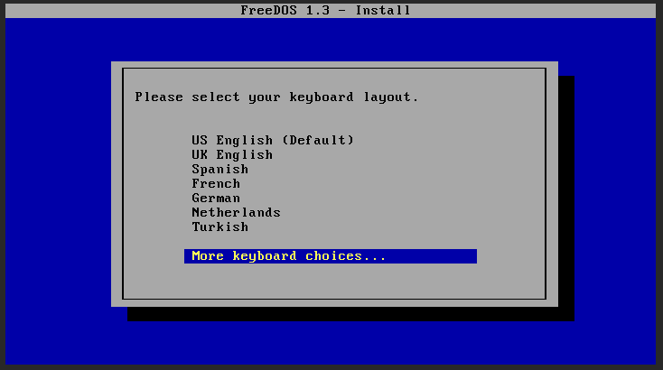Selecione Brazil extended para ABNT2
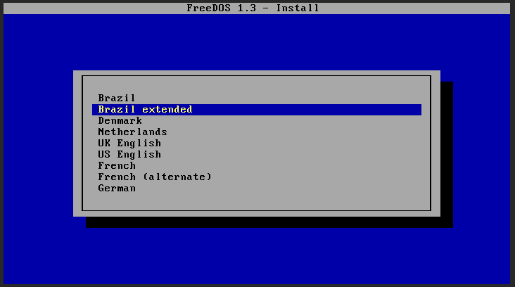YES - Overwrite MBR para gravação do bootcode...
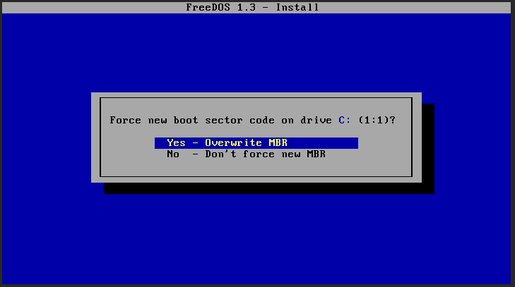Caso você queira o básico basta selecionar Plain DOS system, mas como eu quero Doom pré-instalado vou de Full installation including applications and games...
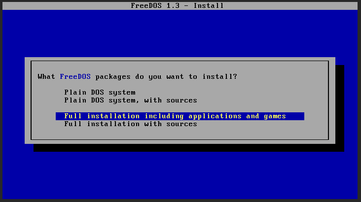Caso esteja de acordo com a instalação selecion Yes - Please install FreeDOS...
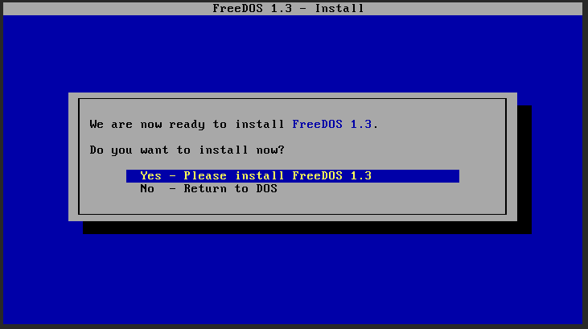E aguarde o fim da instalação...
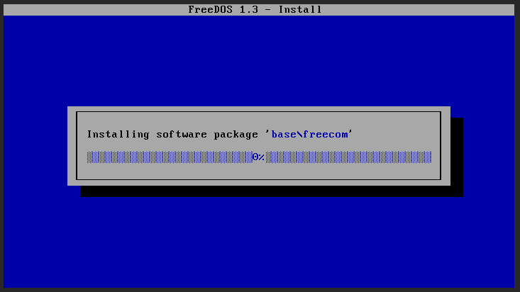 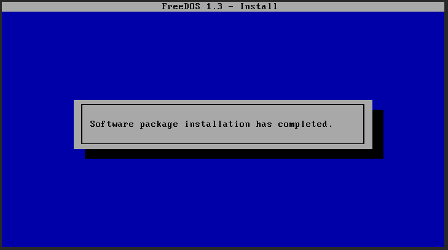Assim que tiver finalizado escolha Yes - Please reboot now para reiniciar.

Pós-instalação
A menos que você saiba muito bem o que está fazendo vá de opção 2 - Load FreeDOS with JEMMEX (more compatible)...
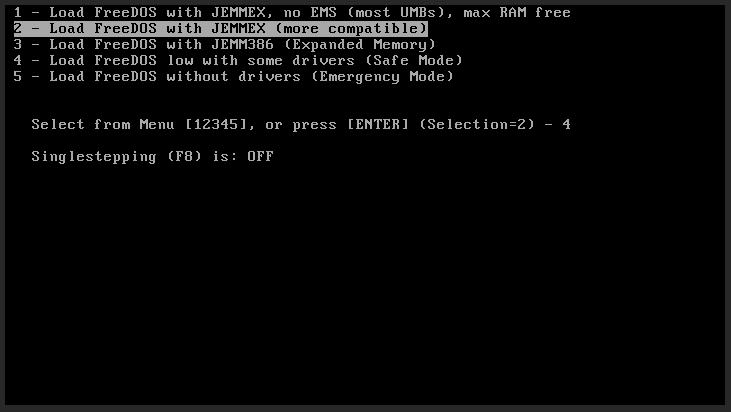E pronto! Você está no FreeDOS!
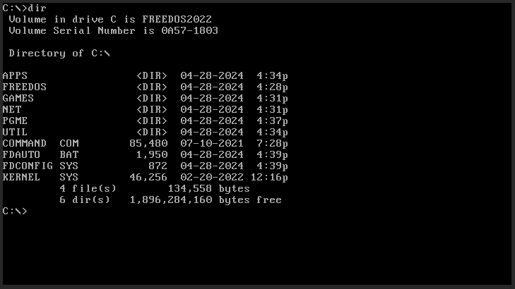Caso você seja um usuário de Unixlike você pode usar os comandos de aliases abaixo para facilitar a sua navegação:
alias ls=dir
alias clear=cls
E é claro que se você for em C:\GAMES\BOOM\BOOM.EXE vai ter Doom né?
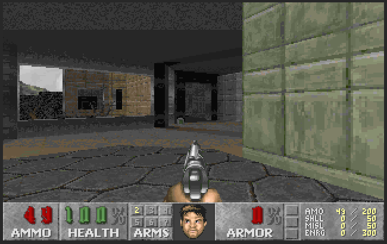ps: Sim, se você tiver uma .wad original vai rodar sim.
(Open)GEM
Utilizar o DOS não te impede de ter uma interface gráfica completa, na era dos Atari ST existia o maravilhoso GEM Desktop Environment, e graças a Shane Coughlan e a Opendawn, podemos ter uma versão nova disso!
No disco bônus do FreeDOS (FDXXBNS.iso).
Se você inseriu o disco e ele foi devidamente reconhecido perceba que aparece CD-ROM configured as R: drive na tela.
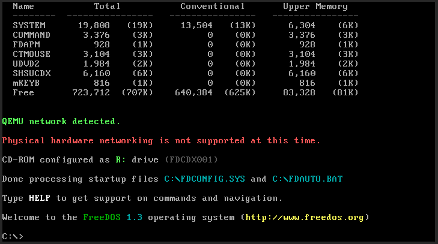Uma vez que a mídia de instalação foi reconhecida você pode adicionar o gerenciador de pacotes com o comando:
fdimples
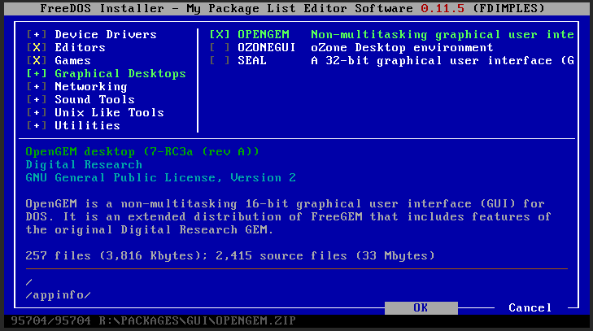
Uma vez no gerenciador de pacotes, basta usar as setas para descer até a categoria Graphical Desktops, ir para o campo direito em OPENGEM, apertar Espaço para marcá-lo para instalação, e depois apertar TAB até selecionar o OK e iniciar a instalação...
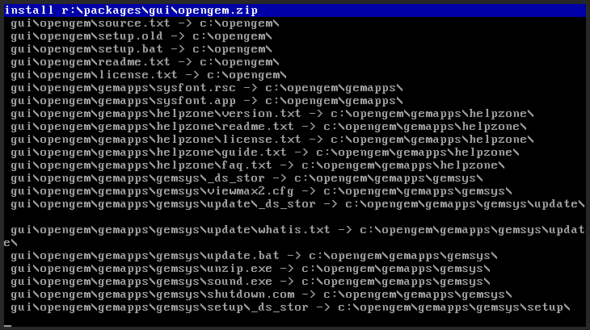O diretório C:\OPENGEM será criado. Navegue até ele com:
Caso queira usar a interface basta usar o comando:
CD OPENGEM
Depois execute a interface com:
GEM.BAT
Se você fez tudo certo a interface OpenGEM será iniciada...
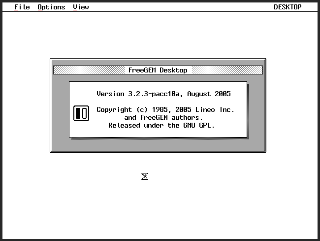Fim!
Agora basta seguir o mesmo procedimento para outras interfaces e aplicativos 😀